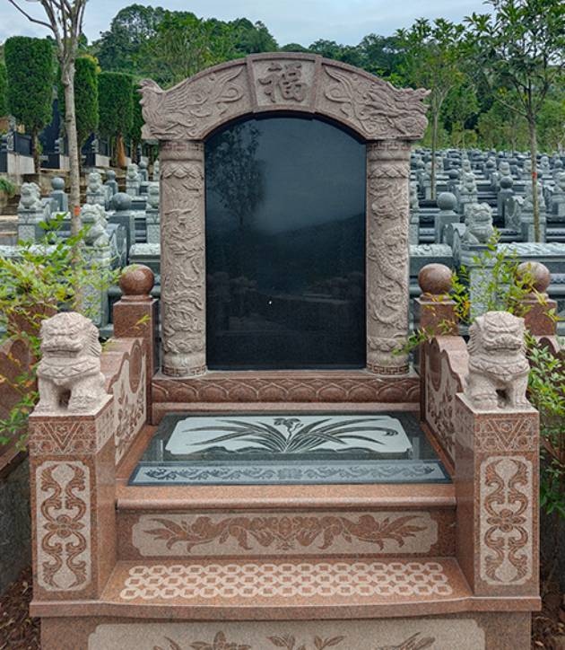

园区航拍视频
可直观看到园区山体、道路、墓区与整体环境。
成都 · 园区实景 · 来园咨询
页面展示燃灯寺公墓相关实景素材，包括园区航拍、墓区环境、碑型参考和入口照片。 到园前可先查看现场环境，并电话联系咨询来园安排。
可直观看到园区山体、道路、墓区与整体环境。

山景开阔，园路清晰，墓区排列有序。

提供现场碑型参考，便于来园前先做了解。
园区简介
从航拍和现场照片可见，园区以山体、道路、绿化和墓区分布构成整体格局， 环境安静，视野开阔，适合到园前先做实景了解。
来园前可先了解
从高空视角查看山体、园路与墓区分布。
现场环境、入口、园路和墓区照片集中展示。
支持一键拨号，可先联系确认来园时间和路线。
园区航拍
园区概览
航拍可先了解园区整体格局，再结合实景照片查看墓区、园路和入口环境。
实景墓区
本页展示墓碑近景、格位区域和墓区环境，便于来园前了解现场面貌与碑型风格。
碑型展示
深色石材，线条厚重，整体端庄。
浅灰石材配浮雕立柱，风格清雅。
暖色石材搭配福字雕饰，传统感较强。
白麻石材，雕花纹理丰富。
拱顶造型，碑板开阔。
格位排列整齐，可作为寄存区域参考。
园区环境
从现场照片可见，园区背靠山体，园路清晰，绿化修整有序。 入口、道路和墓区环境均可在实景图片中直接查看。
高空视角下可见山体背景与园区整体分布。
园路平整清晰，进出动线明确。
入口牌坊和周边环境可提前识别，便于到园。
环境实拍
可直观看到山体与墓区分布。
山景开阔，墓区排列整齐。
园路规整，行列清晰。
绿化修整统一，园区层次分明。
主路平整，进出动线清晰。
园区建筑与配套环境。
到园时的入口识别点。
联系咨询
电话咨询
移动端支持一键拨号，可先电话咨询后预约到园。
立即拨号园区地址
到园前可先电话联系，确认路线与来园时间。

到园时可按入口牌坊识别园区位置。
园路平整清晰，便于到园前了解现场环境。
到园提示
到园前可先电话联系，确认时间、路线和来园安排。
相关检索